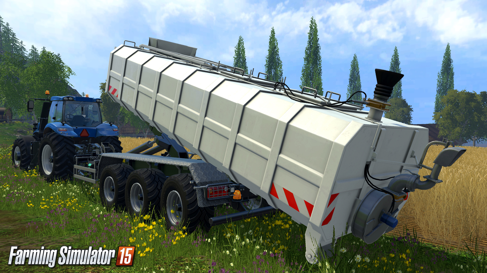
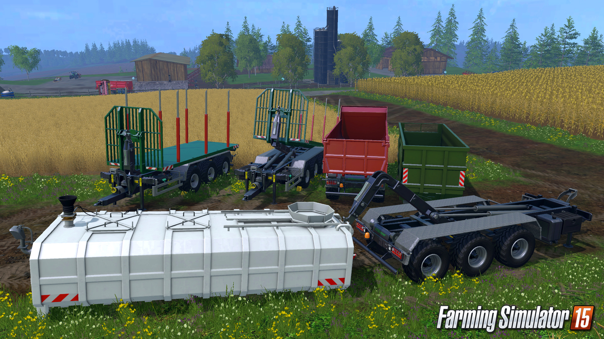
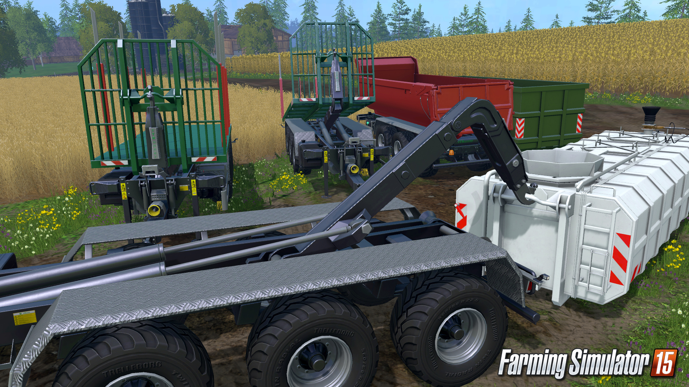
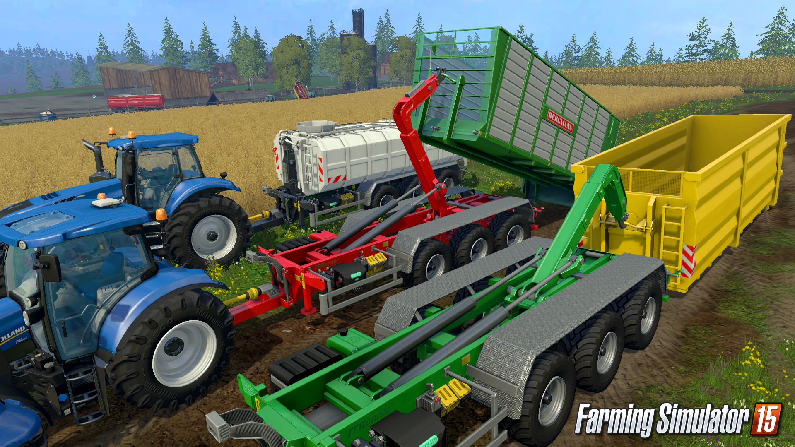
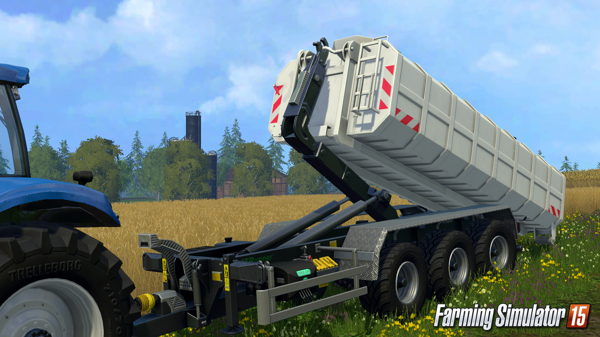

'">



ITRunner
Description
Extend your gaming experience with the first official extension for Farming Simulator 15! This DLC contains new Trailer equipment from ITRunner, Bergmann and Farmtech. With the hooklift trailer and its associated equipment, you can now drop-off useful tools across the map, right next to your crops! Once downloaded, the additional content will be available in the in-game shop. Be sure to have sufficient in-game funds to buy the machinery. The DLC contains the following equipment: - ITRunner 26.33 HD Hooklift Trailer - ITRunner Skip - Bergmann HT 50 Chaff Container - ITRunner Grain Container - ITRunner Flatbed (Wood) Container - ITRunner Flatbed (Bales) Container - ITRunner Slurry Tank - Farmtech Fortis 2000 Manure Spreader Module